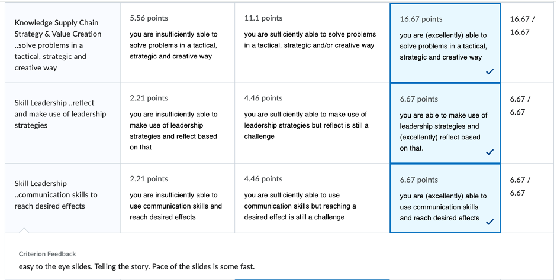
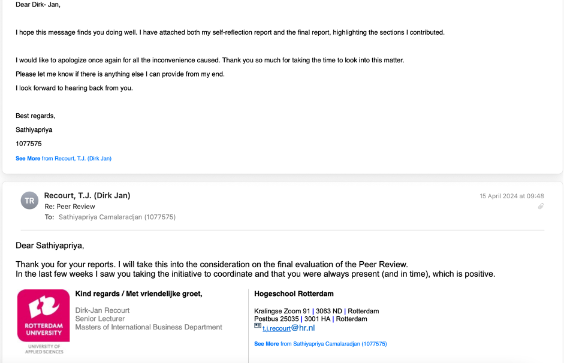
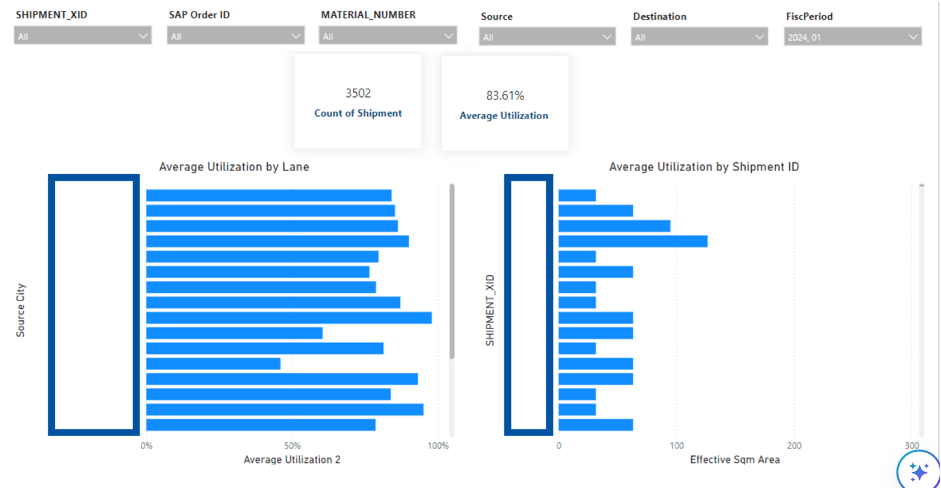
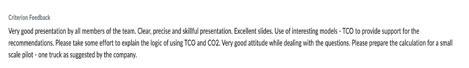
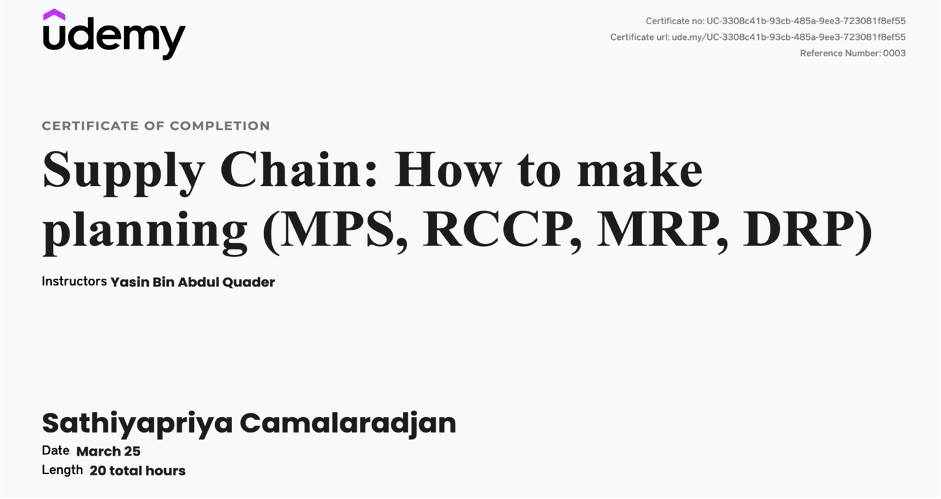

I am currently pursuing a Master's degree in International Supply Chain Management. Throughout my academic journey, I have cultivated a robust understanding of supply chain principles and practices, with a particular focus on process improvement and sustainable supply chain strategies.
This reflective professional portrait aims to demonstrate my personal and professional development as I transition from a student to a future supply chain professional.
Throughout my Master’s program in International Supply Chain Management, I have honed several key personal qualities essential for a successful career in this field. These include critical thinking, effective communication, leadership, and a commitment to continuous improvement. My ability to analyze complex problems and develop practical solutions was significantly enhanced during my coursework and various projects. A pivotal moment in my development was creating a video presentation for IKEA during my Supply Chain Management course. Initially, my script was straightforward but lacked engagement.
After receiving constructive feedback, I reworked the presentation to include storytelling techniques, making it more compelling. This revision earned me a high grade and greatly improved my presentation skills, demonstrating my ability to adapt and learn from feedback. Additionally, feedback from peers and professors has been instrumental in shaping my professional identity. Constructive criticism on my video presentation script, for example, taught me to develop a more engaging communication style. This experience underscored the importance of receiving and implementing feedback to enhance my skills continually.
In the Integrated Supply Chain Planning course, I encountered a challenging situation that significantly enhanced my self-awareness and understanding of team dynamics. Despite diligently performing my assigned tasks, I received low peer reviews because I did not effectively communicate my contributions. This feedback highlighted the importance of advocating for my work and ensuring my efforts are recognized.
To address this issue, I initiated discussions with my team to clarify my contributions and understand their perspectives. I also scheduled a meeting with the professor to explain my tasks and resolve the misunderstanding. This proactive approach not only helped me pass the project but also underscored the importance of effective communication and self-advocacy.
Throughout various group assignments, I have developed a deep understanding of the multifaceted nature of stakeholder interests. A prime example of this was during the Supply Chain Management Simulation course, where I had to navigate the priorities of VPs of procurement, sales, and operations under stringent deadlines. In my role as the VP of Supply Chain, I successfully led our team to consistently rank in the top three across all rounds of the simulation. This experience honed my ability to manage complex stakeholder dynamics and make strategic decisions that progressively improved our return on investment (ROI). It also significantly enhanced my capacity to perform under pressure, showcasing my competence in aligning diverse interests effectively in high-stress situations.
My coursework and projects have equipped me to assess future trends and technologies in the supply chain industry. For example, in the Supply Chain Innovation course, I researched Digital Twin Technology's potential to enhance supply chain transparency and security. This research allowed me to propose innovative solutions tailored to organizational needs.
Reflecting on my personal leadership development, I have learned to make decisions that add long-term value. In a thesis project, I implemented a Container Utilization dashboard that aligned with the company’s long-term visibility goals by optimizing container utilization. This project showcased my ability to think strategically and implement solutions that contribute to organizational success.
Collaboration has been a cornerstone of my development. In the Project Management Living Lab, I worked in a diverse team to achieve a common goal of conducting a life cycle assessment for a real-world client. My ability to facilitate effective communication and ensure alignment among team members was crucial to our success.
Throughout the project, I leveraged my skills in data analysis and project management. I coordinated presentations, distributed tasks based on individual strengths, and ensured that our presentation milestones were met. Regular updates and presentations of data findings kept stakeholders informed and involved, fostering a collaborative environment. My leadership was evident as I guided the team through challenges, maintained morale, and provided direction to keep us on track. Our collaborative efforts culminated in a highly praised final presentation.
During my Operations and Maritime classes, I faced significant challenges in understanding and using Excel, which is essential for data analysis in supply chain management. Recognizing the need for improvement, I addressed this issue during my coaching sessions in the Personal Leadership Development course. My coach recommended taking online courses to enhance my skills.
Following this advice, I enrolled in a comprehensive Excel course on Udemy tailored for supply chain management. This course greatly improved my performance in subsequent projects and assignments, demonstrating my commitment to continuous learning and self-improvement.
Solving practical problems has been a key aspect of my education. In the Research Skills course, I conducted applied research on optimizing inventory levels, which required arranging and combining various resources to achieve effective results. This project demonstrated my ability to drive stakeholder engagement and deliver practical solutions.
During my internship at Kraft Heinz, I led a project to streamline the documentation legalization process, resulting in a 40% reduction in costs. This project involved multiple stakeholders and had a direct impact on operational efficiency. I took full responsibility for the project's success, from initial planning and stakeholder communication to implementation and evaluation, showcasing my ability to deliver results while managing responsibilities effectively.
In conclusion, my Master's program has provided me with a comprehensive understanding of supply chain management and equipped me with the skills necessary to thrive as a future supply chain professional. The experiences and feedback I have received have shaped my professional identity and prepared me to tackle the challenges and opportunities in the supply chain industry.
Key Takeaways: